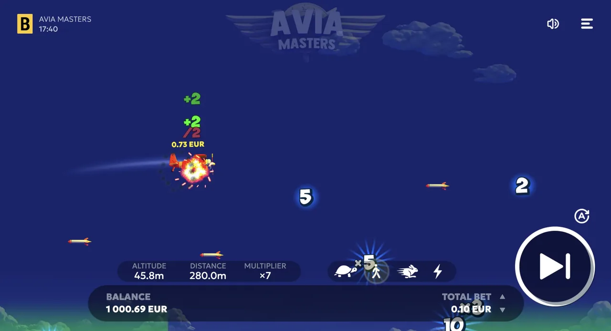

An honest look at BGaming's Aviamasters: what it is, the real RTP, how it plays, and whether it's worth your time and money.
🔞 18+ only · Real-money gambling
This is our hands-on review of Aviamasters, the crash game by BGaming. We cover what the game is, how it plays, the real RTP, whether it's legit, and where to play for real. Short verdict up top, full detail below. 18+; play responsibly.
Aviamasters Review: Quick Verdict
Aviamasters is a solid, fast-paced crash game from an established provider (BGaming). Its strengths are a 97% RTP, low volatility, a x250 maximum multiplier worth up to €250,000, and a free demo. Its limits are the same as any crash game: a house edge, high variance, and no way to influence the outcome. If you want a quick, one-decision game and treat it as entertainment, it's worth a try. If you're looking for a way to make money, it isn't one. We do not publish a star rating unless a disclosed review methodology is in place — see Field Rules.
What Is Aviamasters?
Aviamasters is a crash/instant game by BGaming with a plane theme. A plane takes off, a multiplier climbs as it flies, and your job is to cash out before the round ends. There are no reels or paylines; it's one decision, repeated: cash out now, or risk one more moment for a higher multiplier.

Aviamasters in play
Gameplay & Features
You set your stake, then a plane takes off and a multiplier climbs as it flies. Cash out before the round ends and you keep your bet times the current multiplier; wait too long and the round ends, taking that bet. Many versions let you place two bets at once and set an auto-cash-out to lock in at a chosen multiplier. Higher-risk play chases bigger multipliers and loses more often. Aviamasters' notable features are the option to run two bets in the same round and an auto-cash-out that locks in your win at a preset multiplier, which is useful if you don't want to rely on reflexes.
RTP, Volatility & Max Win
Aviamasters runs at an RTP of 97%, which leaves a 3% house edge. RTP is a long-run average measured across millions of rounds, not a promise for your session, so short runs can swing well above or below it. Every round is independent and random; nothing that happened before changes the next result. The biggest payouts come from holding for a high multiplier before the round ends, which happens rarely by design. Confirm the exact max multiplier for your operator and edition in-game.
Try the Free Demo
You don't have to take our word for it — play the Aviamasters demo free, with no deposit or download, and see how the cash-out timing feels for yourself.
Live Demo
Is Aviamasters Legit?
Yes, the BGaming game is legitimate and runs on a certified RNG. The scams are clone sites and 'predictor' apps using the name. For the full check and how to spot fakes, see is Aviamasters legit or a scam?.
Where to Play Aviamasters
Compare licensed operators that carry Aviamasters, with bonuses and payout speeds, on our Aviamasters casinos page. Confirm the game and your payment method are available in your region before depositing. 18+.
Pros & Cons
✓Pros
established provider (BGaming)
simple, fast gameplay
free demo
low volatility
RTP 97% with a x250 max multiplier
✗Cons
house edge and high variance like all crash games
no skill can change the odds
heavily cloned, so you must stick to licensed operators
Who Aviamasters Is For
It suits players who like quick, high-variance crash games and want to control their own cash-out timing. It's not for anyone chasing guaranteed returns, and not for players who prefer feature-rich slots with bonus rounds.
Aviamasters FAQ
Is Aviamasters worth playing?
If you enjoy fast, one-decision crash games, Aviamasters is worth a try: it has a 97% RTP, a x250 maximum multiplier and a free demo so you can test it at no cost. As with any gambling game it has a house edge, so play it for entertainment, not income.
Who makes Aviamasters?
Aviamasters is developed by BGaming and offered through licensed casino operators. On a legitimate site the game lists BGaming as the provider and the operator shows its gaming licence.
What is the RTP and max win of Aviamasters?
Aviamasters has an RTP of 97% and a maximum multiplier of x250, with a top payout capped at €250,000. Aviamasters 2 keeps the same 97% RTP but raises the ceiling to x1000.
Is Aviamasters rigged?
No. Aviamasters runs on a certified random number generator, so outcomes aren't fixed against you. It has a normal house edge (RTP 97%, so a 3% margin), which isn't rigging. What people call 'rigged' is usually variance: random losing streaks.
Can you win real money on Aviamasters?
Yes, it pays real money at licensed operators, but it's a game of chance with a house edge, so you can just as easily lose. No strategy, 'hack' or predictor changes the odds. Play for fun, set limits, and never chase losses.
Play Responsibly
Aviamasters is a real-money game of chance, not a way to make money. Play for entertainment only, set deposit and time limits before you start, and never bet money you can't afford to lose. You must be 18+ (or 21+ / the legal age in your country). If gambling stops being fun or feels out of control, get free, confidential help at BeGambleAware.org, GamCare, or the National Council on Problem Gambling (1-800-522-4700 in the US).
We may earn a commission if you sign up through links on this page, at no extra cost to you. It never affects our rankings or verdicts.
By Ryan Murton, Growth & Product covering crash and casino games for 7 years. Last updated: . See our editorial approach on the About page.